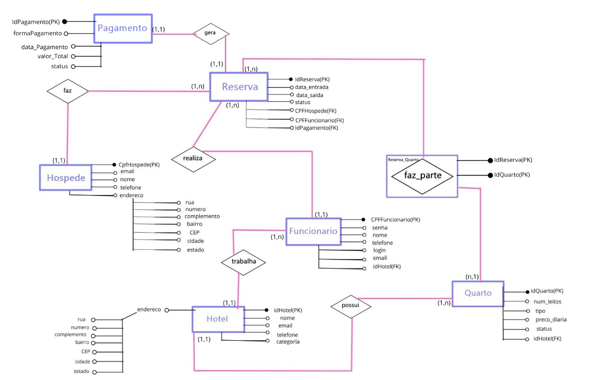

MEU NOME É KAROLAINE
PEREIRA...
Estudante de Engenharia de Software na Uninter
Prazer em conhecer você...
Sobre mim...
Olá! Meu nome é Karolaine Pereira, moro em Niterói/Rio de Janeiro.
Tenho paixão por tecnologia desde os meus 7 anos, adorava explorar o Windows e resolver os problemas que eu mesma criava (por exemplo, fazer limpezas no S.O após colocar malware no meu computador, pois não sabia a forma segura para fazer downloads!).
Atualmente, tenho 23 anos, comecei a praticar programação em 2023 com a linguagem C#. Estou praticando HTML, CSS e JS, mas a minha paixão é Backend, dados e Cibersegurança. Estou sempre buscando aprender e evoluir.
Curiosidade sobre mim: adoro animais, e quando posso, ajudo gatinhos em situação de rua!! Além disso, meus hobbies são: ler livros góticos, assistir filmes de terror, k-dramas, fazer maquiagens alternativas e comprar na Shein/Shopee (hahaha).
❝“Escolha um trabalho que você ame, e não terá que trabalhar um único dia na vida.” — Confúcio
Minha formação
Ensino médio: COLÉGIO RUI BARBOSA 2017-2019
COMPLETO
Ensino superior: BACHARELADO EM ENGENHARIA DE SOFTWARE
CENTRO UNIVERSITÁRIO INTERNACIONAL UNINTER 2025-2029
ANDAMENTO
Idioma: Inglês
Leitura: Intermediário
Fala: Básico
Minhas certificações
Microlins
Banco de Dados com SQL Server, Lógica de Programação, Programação C#
com Visual Studio Essencial, Intermediário e Avançado I e II,
Segurança na Era Digital.
Microsoft
Conceitos básicos de segurança, conformidade e identidade - SC900
Conhecimento em segurança, conformidade, identidade e privacidade no
Microsoft Azure, com foco em proteção de informações e gestão de
riscos em ambientes de nuvem.
Meu Portfolio
Projetos desenvolvidos durante o curso:
BANCO DE DADOS RELACIONAL - MODELO MER

Desenvolvi do zero o projeto de modelagem de banco de dados para uma rede de hotéis, seguindo uma análise de requisitos já existente. Utilizei o Canva para criar um design visual agradável e profissional dos diagramas. Estruturei entidades, atributos e relacionamentos conforme as necessidades do negócio, garantindo a integridade e organização das informações. Implementei o banco de dados no MySQL Workbench, aprimorando habilidades práticas de inserção, exclusão e atualização de cadastros, além de documentar detalhadamente as regras de negócio. O resultado foi um modelo eficiente, escalável e alinhado às necessidades do projeto, demonstrando domínio técnico adquirido durante o desenvolvimento na faculdade e preocupação com a experiência do usuário.
LÓGICA E PROGRAMAÇÃO DE ALGORÍTMOS - MENU DE CONSULTAR FUNCIONÁRIOS
Criei um programa funcional para gerenciamento de funcionários, que inclui cadastro, consultas e remoção de dados, estruturado em um menu interativo. Durante o desenvolvimento, apliquei conhecimentos sólidos em lógica de programação e algoritmos para organizar fluxos, condições e manipulação de dados de forma eficiente. Aprimorei habilidades práticas em Python, incluindo controle de entrada e saída, uso de estruturas de repetição e condicionais, e tratamento de dados em listas. Esse projeto reforçou minha capacidade de traduzir requisitos em código funcional, promovendo organização, clareza e usabilidade no desenvolvimento de soluções simples e eficazes.